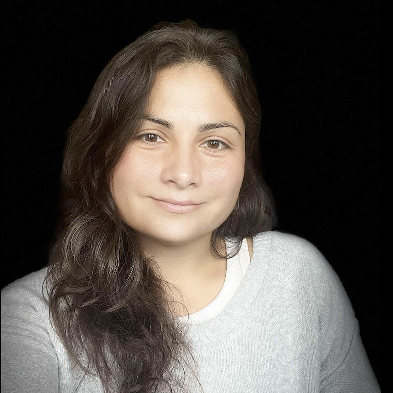

Medical Writer & Geneticist
I'm a medical writer who likes to be relentlesly intentional, consistent, and fun. I specialize in preclinical and clinical drug development and manufacturing.
I'm currently the pharmaceutical writer for Valor Compounding Pharmacy. I've learned nearly everything I now know about compounding and patient care from our exceptionally caring pharmacy teams and through hours and hours of reading. Being a living encyclopedia of pharmacy law and FDA regulations is a lot more enjoyable than it sounds.
Before writing full-time, I spent a decade working as a research fellow and technician. You can download any of my publications here, for free. I will always support open science.
I have a PhD in Genetics from Stanford University and BA degrees from UC Berkeley in Molecular & Cell Biology and in English. I also have a black cat named Kona, who is the naughtiest coworker and best writing companion.